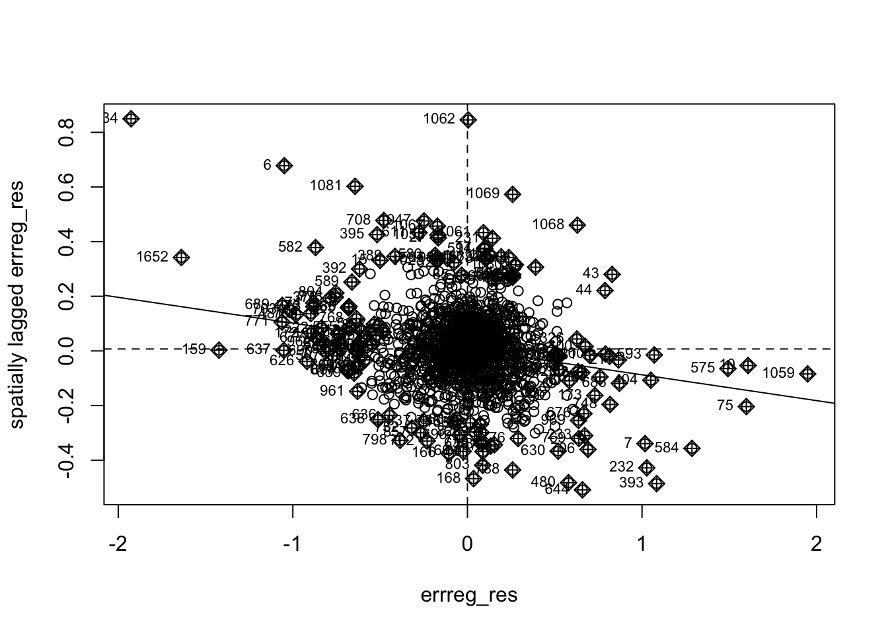
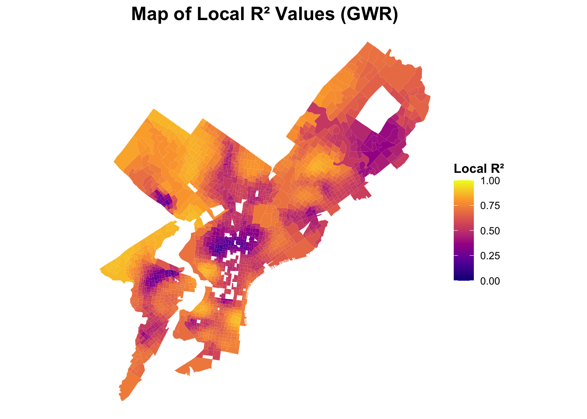
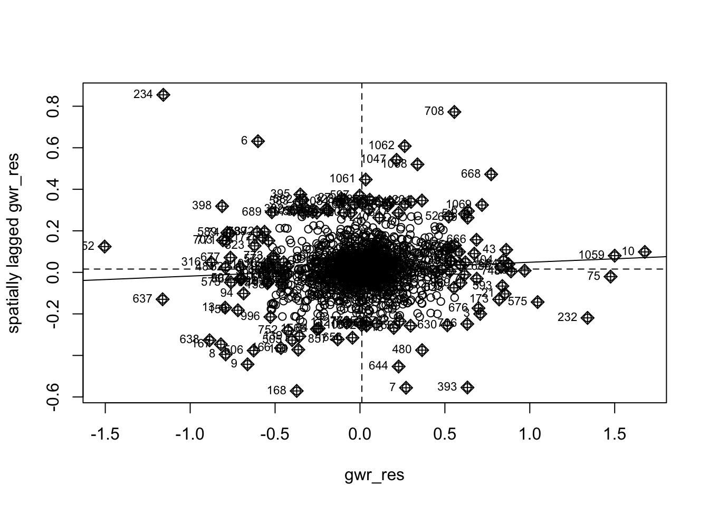
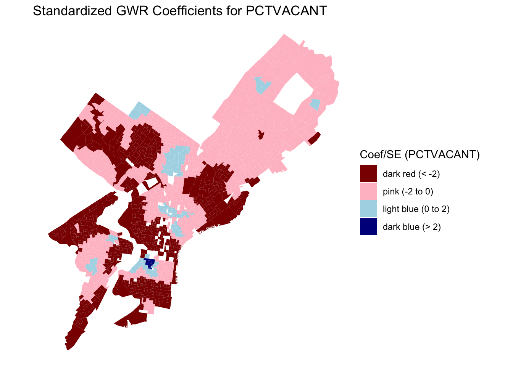
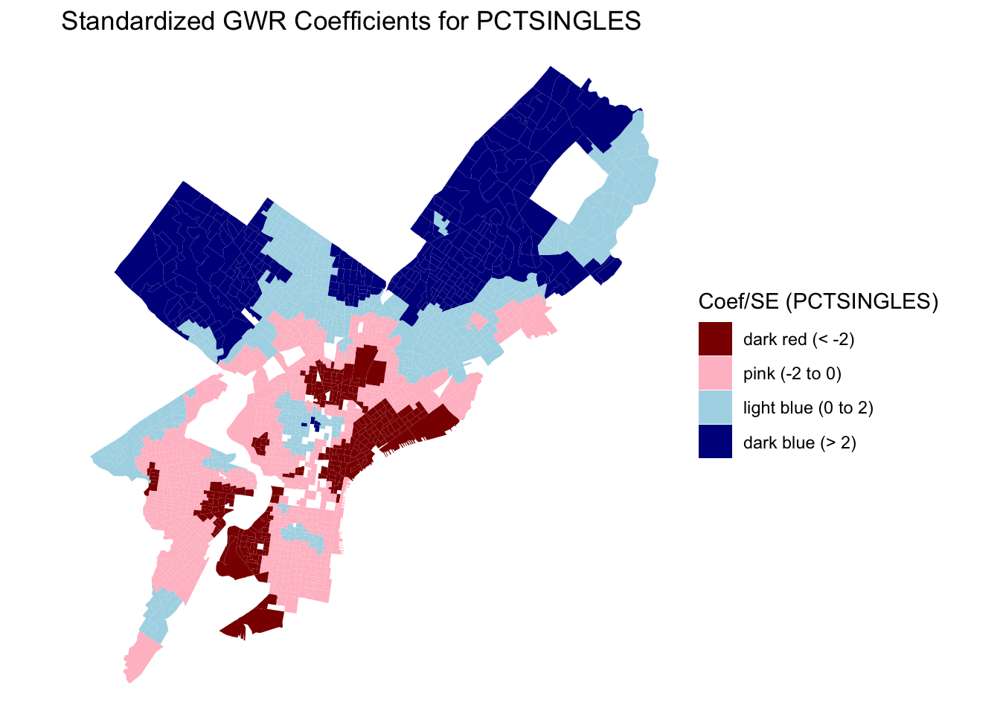

Monte-Carlo simulation of Moran I
data: Regression_shpData$LNMEDHVAL
weights: queenlist
number of simulations + 1: 1000
statistic = 0.79356, observed rank = 1000, p-value <
0.00000000000000022
alternative hypothesis: two.sidedHomework 2: Using Spatial Lag, Spatial Error and Geographically Weighted Regression to Predict Median House Values in Philadelphia Block Groups
1 Introduction
This report investigates spatial patterns in housing values across Philadelphia, building on prior analysis that used Ordinary Least Squares (OLS) regression to model the relationship between median house value and several socioeconomic predictors. Specifically, the dependent variable was the natural log of median house value (LNMEDHVAL), and the predictors included the percentage of single-family homes (PCTSINGLES), the percentage of residents with a bachelor’s degree or higher (PCTBACHMOR), the natural log of the number of people below the poverty line (LNNBELPOV), and the percentage of vacant housing units (PCTVACANT).
OLS regression assumes that observations and their residuals are independent of one another—an assumption that is often violated when analyzing spatial data. Initial exploratory analysis revealed strong spatial clustering in both the dependent variable and predictors, with clear geographic patterns across Philadelphia’s block groups. Furthermore, the chloropleth map of OLS standardized residuals revealed a concentration of lower residuals in the southern half of Philadelphia, with a gradient effect radiating from North Philadelphia into adjacent regions. This spatial clustering in both the variables and residuals suggests systematic under-prediction in these areas, indicating the presence of spatial autocorrelation which violates the independence assumption of OLS.
As a result, we will implement multiple spatial regression models, each designed to account for different spatial patterns and relationships that may have contributed to the observed spatial autocorrelation in our model. First, we implement spatial lag regression, which incorporates the spatially weighted average of neighboring block groups’ median home values as a predictor. Second, we apply spatial error regression, which models spatial autocorrelation in the error structure by incorporating spatially weighted residuals. Finally, we employ Geographically Weighted Regression (GWR), which allows regression coefficients to vary across space, addressing the assumption of spatial stationarity that both spatial lag and spatial error models rely upon.
2 Methods
2.1 The Concept of Spatial Autocorrelation
Spatial autocorrelation builds upon the 1st Law of Geography, Tobler’s Law, which states that all things are related but near things are more related than further observations.
Spatial autocorrelation examines the relationship of values of the same variable at nearby locations. A positive relationship is indicated by related values at nearby locations and a negative relationship is indicated by significantly different values at nearby locations. Moran’s I is the statistical measure used to detect spatial autocorrelation, giving a value closer to 1 for positive spatially dependent values, -1 for negative spatially dependent values, and 0 for values that exhibit no spatial autocorrelation. The formula for calculating Moran’s I is as follows: \[ I = \frac{N}{W} \cdot\frac{\sum_{i=1}^N \sum_{j=1}^N W_{ij} (X_i - \bar{X})(X_j - \bar{X})} {\sum_{i=1}^N (X_i - \bar{X})^2} \]
\(\bar{X}\) is the mean of the variable X, \(X_i\) is the variable value at a particular location i, \(X_j\) is the variable value at another location \(j\), \(W_{ij}\) is the value given by the weight matrix of location of \(i\) relative to \(j\), and n is the number of observations. This formula captures the covariance between neighboring values, standardized by the overall variance. For each pair of locations \(i\) and \(j\), Moran’s I measures how similarly their values deviate from the mean, multiplies those deviations, weights the result by their spatial proximity, and normalizes by the overall variance.
This analysis uses a queen contiguity weight matrix, which defines neighbors as polygons sharing either a border or a vertex. The matrix is square, n x n, where n is the number of observations, that assigns a value of 1 for neighbors and 0 otherwise. Unless there is a strong theoretical reason for using a particular weight matrix, statisticians will sometimes use multiple weight matrices (other contiguity-based measurements like rook or distance-based measurements) to ensure results are robust rather than just a byproduct of a single spatial definition.
In R, we can assess the statistical significance of Moran’s I using a Monte-Carlo permutation test via the moran.mc() function. This method computes Moran’s I for the original variable, then randomly shuffles the variable values 999 times, recalculating Moran’s I for each permutation. We evaluate where our original Moran’s I falls by ranking it relative to the randomly permuted Moran’s I, either in descending order for positive autocorrelation or ascending for negative. A pseudo p-value is then calculated by dividing the rank of the original Moran’s I by the total number of permutations, estimating the likelihood of observing such a value under spatial randomness. We test for the null hypothesis, \(H_0\), no spatial autocorrelation against the two-sided alternative \(H_a\), positive spatial autocorrelation or negative spatial autocorrelation. Visual diagnostics include a histogram of the permuted data’s Moran’s I values with the original Moran’s I highlighted, and a Moran scatterplot comparing the block groups’ original variable values to the average of its neighbors, also known as spatially lagged variable values. A clear pattern in the scatterplot would suggest spatial autocorrelation while randomness implies no spatial autocorrelation.
Local spatial autocorrelation examines how similar or dissimilar values at one location are to nearby locations. Rather than describing the overall global spatial patterns, local spatial autocorrelation pinpoints areas of spatial clustering or spatial outliers. We test for local spatial autocorrelation using LISA, Local Indices of Spatial Association. In this case, we use the local Moran’s I as a statistical measure of local spatial autocorrelation. In R, we compute Local Moran’s I using the localmoran() function. Conceptually, the statistic is calculated by taking the deviation of a value at location \(i\) from the global mean, multiplying it by the weighted average of its neighbors’ deviations, and normalizing by the total variance across all locations. The null hypothesis for local spatial autocorrelation is \(H_0\), no local spatial autocorrelation at location \(i\) while the two-sided alternative hypothesis is \(H_a\), a positive or negative spatial autocorrelation at location i. The localmoran() function implements a permutation-based test for statistical significance. For each location, the value at \(i\) is held constant while the values of its neighbors are randomly shuffled. A two-sided pseudo p-value is then computed based on the rank of the original \(Ii\) relative to the permuted values’ Moran’s I. This p-value is returned by indexing the results of the localmoran function with \(\Pr(z \neq E(I_i))\) and can be conceptualized as the probability that the observed \(Ii\) is significantly different from what we’d expect under spatial randomness in either direction (positive or negative). Visually, we can create a map that shows the spatial distribution of Local Moran’s I p-values and clusters to further assess for local spatial autocorrelation.
2.2 A Review of OLS Regression and Assumptions
Ordinary Least Squares (OLS) regression estimates the relationship between a dependent variable and one or more independent variables by minimizing the sum of squared differences between observed and predicted values. In the context of multiple regression, OLS quantifies the unique contribution of each predictor to the outcome while controlling for the influence of the others. Unlike simple regression, which models the dependent variable using a single predictor, multiple regression incorporates several predictors, each with a coefficient representing its effect on the dependent variable. Multiple regression relies on several key assumptions, most of which mirror the assumptions of simple regression: linearity between the dependent variable and each predictor, normally distributed residuals, randomness of residuals— indicating that observations are not systematically related, homoscedastic of residuals or constant variance across all values, a continuous dependent variable, and, a unique assumption for multiple regression, no perfect multicollinearity between predictors. A more comprehensive overview of Ordinary Least Squares (OLS) regression can be found in Homework 1: Using OLS Regression to Predict Median House Values in Philadelphia.
As previously mentioned, a core assumption of OLS regression is the randomness of residuals or, in other words, the independence of residuals from one another. When spatial autocorrelation is present, this indicates that values of a variable at nearby locations are related to one another, violating the assumption of independence. As a result, the OLS error term may contain insightful spatial patterns rather than random noise and beta coefficients may be inefficient estimates. In practice, this can manifest as systematic over- or under-prediction. We can statistically quantify the spatial autocorrelation of residuals by calculating the Moran’s I of the OLS residuals, Moran’s I which we previously introduced as a measure of bidirectional spatial dependence.
Another way to assess spatial dependence in OLS residuals is to regress each residual on its spatially lagged counterpart. A spatial lag refers to the value of a variable at neighboring locations, which, in this case, are defined by the queen weights matrix. By creating spatially lagged residuals and regressing each residual on its lagged value, we can test whether residuals are systematically related across space. In the statistical summary of this regression, the slope \(b\) represents the coefficient of the lagged residuals when predicting the original residuals. This slope quantifies the strength and direction of spatial dependence. If it is significantly different from zero, it suggests that residuals are spatially autocorrelated, meaning the assumption of independence is violated and the OLS estimates may be compromised. Visually, this relationship can be assessed using a scatterplot of OLS residuals against the weight or spatially lagged residuals.
In addition to estimating regression coefficients, we can use various libraries in R to perform statistical tests that assess other assumptions of OLS. One assumption we can test for is homoscedasticity, which refers to the constant variance of residuals across all predicted values. If residuals vary systematically with predicted values, this indicates heteroscedasticity, or non-constant variance, which violates the assumption. This assumption is closely tied to the independence of errors as residuals that show heteroscedasticity could imply non-random or dependent variance which can compromise estimation. A simple visual diagnostic involves plotting OLS residuals by predicted residuals. In R, we can use the whitestrip and lmtest library to perform three commonly used statistical tests: the Breusch-Pagan Test, the Koenker-Bassett Test or studentized Breusch-Pagan Test, and the White Test. Each test evaluates the null hypothesis of homoscedasticity or no heteroscedasticity and the alternative hypothesis of heteroscedasticity. If the result p-value for these tests is less than 0.05, then we can reject the null hypothesis for the alternate hypothesis of heteroscedasticity.
Another key assumption of OLS regression is the normality of errors. Residuals should behave like random noise, containing no systematic structure, and should follow a normal distribution. A simple visual diagnostic of residual normality is to plot residuals using a histogram. In R, we can perform a statistical diagnostic of normality by using the Jarque-Bera Test, available through the tseries package. The null hypothesis for the Jarque-Bera Test is that the residuals follow a normal distribution while the alternative hypothesis is non-normality or non-normal distribution. If the resulting p-value is less than 0.05, we reject the null hypothesis in favor of the alternative, indicating a violation of the normality assumption.
2.3 Spatial Lag and Spatial Error Regression
The statistical programming language R was used to run spatial lag and spatial error regressions.
The spatial lag regression model operates on the assumption that a dependent variable’s value at any given location is associated by the values of that same variable at neighboring locations. To define spatial proximity in this analysis, we utilized a queen contiguity weight matrix W, which establishes neighboring relationships between any locations that share a border or vertex. The model equation for our spatial lag regression model is as follows: \[ \begin{aligned} \text{LNMEDHVAL} = &\rho W(\text{LNMEDHVAL}) + \beta_0 + \beta_1 \text{PCTVACANT} \\ &+ \beta_2 \text{PCTSINGLES} + \beta_3 \text{PCTBACHMOR} + \beta_4 \text{LNNBELPOV} + \varepsilon \end{aligned} \] Here, \(\rho\) is the coefficient of the y-lag variable W(LNMEDHVAL), which itself is the weighted average of log-transformed median house value at neighboring locations. \(\varepsilon\) represents the random variation not included in the model. The \(\beta\) coefficients of the spatial lag models have a fairly complex interpretation which is beyond the scope of the report.
In contrast, the spatial error regression model relies on the assumption that the residual at one location is associated with residuals at nearby locations. As in the previously discussed spatial lag model, we will use a queen contiguity weight matrix W. The spatial error regression model is as follows: \[ \begin{aligned} \text{LNMEDHVAL} = &\beta_0 + \beta_1 \text{PCTVACANT} + \beta_2 \text{PCTSINGLES} \\ &+ \beta_3 \text{PCTBACHMOR} + \beta_4 \text{LNNBELPOV} + \lambda W(\varepsilon) + u \end{aligned} \] Similar to OLS regression, \(\beta_0\) represents the dependent variable when all predictors are zero. Also, the coefficients of the predictors \(\beta_1, \beta_2, \beta_3, \beta_4\) each represent the change in the dependent variable with a one unit increase in their respective predictor, holding all other predictors constant. Uniquely, the error term is decomposed into a component with a spatial pattern \(\lambda W(\varepsilon)\) and a random component \(u\), where \(\lambda\) is constrained between -1 and 1 and measures the strength of spatial dependence in the residuals.
It is important to note that all of the previously discussed assumptions of OLS regression are required for both spatial error and spatial lag models, with the exception of independence of observations. Both spatial models are specifically designed to address violations of this independence assumption by accounting for spatial autocorrelation. The goal if for these models to produce residuals free from spatial patterns that would otherwise indicate systematic over- or under-prediction.
The performance of both spatial models will be compared to that of the OLS regression from the previous report using multiple criteria. The first is the Akaike Information Criterion (AIC), which is an estimator of predictor error and provides insight into the quality of the model by penalizing increasing number of predictors that could lead to over-fitting. The lower the AIC, the better the fit of the model.
The second criterion is Log Likelihood, which measures model fit based on maximum likelihood estimation. A higher Log Likelihood indicates better model fit, though this metric can only compare nested models—models where removing parameters from one yields another. Both spatial lag and spatial error models are nested within OLS regression due to their additional spatial parameters, making them comparable to OLS but not to each other using Log Likelihood.
A third criterion is the Likelihood Ratio Test, which also comes with the restriction that it be used between nested models (i.e comparing OLS to a spatial model). The null hypothesis of this test is as follows: \[ H_0: \text{The spatial model is not a better specification than the OLS model.} \] When this test is conducted, if p < 0.05, we can reject \(H_0\) and state that the spatial model is doing better than the OLS model.
Finally, the Moran’s I statistic of the regression residuals can be compared across models. A Moran’s I value near zero indicates that the model has successfully accounted for spatial autocorrelation. When comparing spatial models to OLS, insignificant values closer to zero suggest better correction of spatial dependence.
2.4 Geographically Weighted Regression
Geographically Weighted Regression (GWR) is a spatial modeling technique that extends the conventional Ordinary Least Squares (OLS) regression by allowing model parameters to vary across geographic space. Whereas OLS assumes a single global relationship between the dependent and independent variables, GWR accounts for spatial nonstationarity, meaning that the strength and direction of these relationships may differ by location.
2.4.1 Mathematical Formulation
The general form of the OLS model is: \[ y_i = \beta_0 + \sum_{k=1}^{p} \beta_k x_{ik} + \varepsilon_i \]
where:
- \(y_i\) is the dependent variable at observation \(i\)
- \(x_{ik}\) is the value of predictor \(k\) at observation \(i\)
- \(\beta_k\) are the global regression coefficients
- \(\varepsilon_i\) is the random error term assumed to be normally distributed and independent
GWR extends this model by allowing each coefficient to vary across geographic space: \[ y_i = \beta_0(u_i, v_i) + \sum_{k=1}^{p}\beta_k(u_i, v_i)x_{ik} + \varepsilon_i \]
where \((u_i, v_i)\) are the spatial coordinates of observation \(i\), and \(\beta_k(u_i, v_i)\) represents the local coefficient for predictor \(k\) at that location.
The model estimates parameters at each location using weighted least squares, with weights determined by a spatial kernel function.
The local coefficients are estimated as:
\[ \hat{\boldsymbol{\beta}}(u_i,v_i) = (X^{T}W_iX)^{-1} X^{T}W_i y \]
where:
- \(X\) is the matrix of independent variables
- \(y\) is the vector of dependent variables
- \(W_i\) is a diagonal matrix of spatial weights for location \(i\)
2.4.1.1 Global R² (Goodness of Fit)
Similar to OLS regression, GWR reports a global R-squared statistic that measures the overall proportion of variance in the dependent variable explained by the model. Its value ranges from 0 to 1, with higher values indicating better model fit.
The formula for the coefficient of determination is:
\[ R^2 = 1 - \frac{SSE}{SST} = 1 - \frac{\sum_{i=1}^{n}(y_i - \hat{y_i})^2}{\sum_{i=1}^{n}(y_i - \bar{y})^2} \]
where: - \(y_i\) = observed values,
- \(\hat{y_i}\) = predicted values from the model,
- \(\bar{y}\) = mean of observed values,
- \(SSE\) = sum of squared errors,
- \(SST\) = total sum of squares.
2.4.1.2 Bandwidth Selection and Weighting Scheme
In Geographically Weighted Regression (GWR), the bandwidth (\(h\)) determines the spatial extent over which data points influence each local regression. Two main approaches are commonly used: fixed bandwidth and adaptive bandwidth.
2.4.1.2.1 Fixed Bandwidth
Under a fixed bandwidth, the spatial extent \(h\) remains constant across all regression points, meaning the geographic area of influence is the same, while the number of observations within each local regression may vary.
\[ w_{ij} = \begin{cases} e^{-0.5 \left( \dfrac{distance_{ij}}{h} \right)^2}, & \text{if } distance_{ij} \le h \\ 0, & \text{otherwise} \end{cases} \]
where \(distance_{ij}\) is the distance between observation \(i\) and \(j\).
This form is known as a Gaussian kernel, which gives higher weight to nearer observations.
2.4.1.2.2 Adaptive Bandwidth
Under an adaptive bandwidth, the number of nearest neighbors (\(N\)) is fixed, but the geographic area \(h\) varies according to local data density.
Areas with dense data use smaller \(h\), while sparse regions require larger \(h\) to include enough neighbors.
\[ w_{ij} = \begin{cases} \left[ 1 - \left( \dfrac{distance_{ij}}{h} \right)^2 \right]^2, & \text{if } j \text{ is one of } i\text{’s } N \text{ nearest neighbors} \\ 0, & \text{otherwise} \end{cases} \]
In this case, \(h\) adapts to ensure that each local regression includes approximately the same number of observations.
For example, if \(N = 20\), one area might require \(h = 5000\,ft\) to reach its 20th neighbor, while another only needs \(h = 2500\,ft\).
In this analysis, an adaptive Gaussian kernel was used, ensuring that dense urban areas and sparse suburban areas are both modeled effectively.
The optimal bandwidth was chosen by minimizing the Akaike Information Criterion (AIC), which balances model fit and complexity.
To test model robustness, a fixed-bandwidth GWR was also calibrated for comparison.
2.4.2 Model Diagnostics
Model performance was assessed using both global and local indicators:
- Global diagnostics: Akaike Information Criterion (AIC, AICc) and quasi-global \(R^2\)
- Local diagnostics: Local \(R^2\), coefficient maps, and standardized ratios (\(\beta / SE\))
- Spatial dependence: Moran’s I statistic of residuals tested whether the GWR residuals remained spatially autocorrelated
Together, these diagnostics determine whether GWR improves explanatory power over OLS and whether it effectively removes spatial dependence from model residuals.
3 Results
3.1 Spatial Autocorrelation
Random Permutation Test/ Monte-Carlo Simulation Table of LNMEDHVAL
Our global Moran’s I value, 0.793, of our dependent variable was considerably different from 0, indicating high positive spatial autocorrelation. Our random permutation test suggests that our Moran’s I was statistically significant as it returned a p-value of less than 0.00000000000000022 which falls into the statistically significant threshold (p < 0.05).The rank of our observed Moran’s I further enforces our findings, suggesting that none of the 999 randomly permuted simulations produced a value as extreme as the one observed. Thus, we can reject the Moran’s I null hypothesis of no spatial autocorrelation as well as consider LNMEDHVAL to be significantly spatially autocorrelated.

Visually, the histogram of the distribution of global Moran’s I values from all the permutation tests shows that our original Moran’s I (highlighted by the red vertical line) towers far above the other Moran’s I. This histogram further indicates that the possibility of retaining our original Moran’s I under true spatial randomness is low.


The Local Moran’s I analysis was conducted to identify spatial clusters and outliers in the distribution of LNMEDHVAL across Philadelphia. Two maps were generated: a significance (p-value) map that highlights areas where spatial autocorrelation is statistically significant and a cluster map that classifies areas into High-High, Low-Low, High-Low, Low-High, and Not Significant clusters based on local spatial relationships.A majority of North East Philadelphia, Upper North Philadelphia and Center City as well as parts of West Philadelphia such as Wynnefield and University City exhibited high values surrounded by other high-value neighbors. A majority of North Philadelphia, Parkside in West Philadelphia, Kingsessing in Southwest Philadelphia, and parts of the South Philadelphia neighborhood exhibited Low-Low relationships or low values surrounded by other low-value neighbors. Only a few areas exhibited Low-High spatial relationships or low values surrounded by other low value neighbors: parts of the South Philadelphia neighborhood and one block group in Torresdale of North East Philadelphia. The Significance Map confirms that most of the identified clusters fall within statistically significant zones (p < 0.05) while the rest of Philadelphia was rendered Not Significant. ## A Review of OLS Regression and Assumptions: Results
Call:
lm(formula = LNMEDHVAL ~ PCTVACANT + PCTSINGLES + PCTBACHMOR +
LNNBELPOV, data = Regression_shpData)
Residuals:
Min 1Q Median 3Q Max
-2.25817 -0.20391 0.03822 0.21743 2.24345
Coefficients:
Estimate Std. Error t value Pr(>|t|)
(Intercept) 11.1137781 0.0465318 238.843 < 0.0000000000000002 ***
PCTVACANT -0.0191563 0.0009779 -19.590 < 0.0000000000000002 ***
PCTSINGLES 0.0029770 0.0007032 4.234 0.0000242 ***
PCTBACHMOR 0.0209095 0.0005432 38.494 < 0.0000000000000002 ***
LNNBELPOV -0.0789035 0.0084567 -9.330 < 0.0000000000000002 ***
---
Signif. codes: 0 '***' 0.001 '**' 0.01 '*' 0.05 '.' 0.1 ' ' 1
Residual standard error: 0.3665 on 1715 degrees of freedom
Multiple R-squared: 0.6623, Adjusted R-squared: 0.6615
F-statistic: 840.9 on 4 and 1715 DF, p-value: < 0.00000000000000022Our OLS results considered all of our model’s predictors, PCTBACHMOR, LNNBELOPOV, PCTSINGLES, and PCTVACANT to be significant and returned an \(R^2\) of 0.6623 meaning that approximately 66% of the variance in logged median house values could be explained by the model.

In our initial visual test for heterodasticity in HW 1, we concluded that our scatter plot of our standardized residuals showed general homoscedasticity or consistent variance of residuals. We decided there was general uniformity of the standardized residuals as most were between -2 and positive 2. There were some outliers that extend past -4 and 4 but determined they did not dominate the overall pattern. We also observed no funneling affect or any other pattern of non-constant variance.
Breusch-Pagan Test Results
Breusch-Pagan test
data: reg1
BP = 113.19, df = 4, p-value < 0.00000000000000022The p-value from the Breusch-Pagan test suggests, however, that the residuals in the OLS regression model likely exhibit heteroscedasticity. The Breusch-Pagan test evaluates whether the residuals from a regression model exhibit constant variance. Since the resulting p-value falls below the conventional significance threshold of 0.05, we reject the null hypothesis of homoscedasticity in favor of the alternative hypothesis that the residuals have non-constant variance.
Studentized Breusch-Pagan Test Results
studentized Breusch-Pagan test
data: reg1
BP = 42.868, df = 4, p-value = 0.00000001102The p-value from the studentized Breusch-Pagan test, a more robust version of our initial Breysch-Pagan test, also suggests heteroscedasticity since the p-value is less than 0.00000001102, well below the conventional threshold of 0.05, allowing us to reject the null hypothesis of homoscedasticity.
White Test Results
White's test results
Null hypothesis: Homoskedasticity of the residuals
Alternative hypothesis: Heteroskedasticity of the residuals
Test Statistic: 43.94
P-value: 0The White’s test is another statistical assessment we used to test whether the residuals from an OLS regression model exhibit constant variance. The results show that p-value from this final statistical test is effectively zero, providing strong evidence against the null hypothesis of homoscedasticity. This result reinforces the presence of heteroscedasticity in the model. All three statistical measures heteroscedasticity contradict our initial visual assessment, which did not clearly indicate a violation. The discrepancy highlights that visual diagnostics alone may be insufficient for detecting non-constant variance and emphasizes the importance of formal statistical testing in validating model assumptions.

In our initial visual assessment for the assumption of normally distributed residuals, we concluded that the histogram of the standardized residuals showed the normality in residuals needed per our assumption and supported the need for the logarithmic transformations we performed to achieve normality.
Jarque Bera Test Results
Jarque Bera Test
data: reg1$residuals
X-squared = 778.96, df = 2, p-value < 0.00000000000000022The Jarque-Bera test statistically evaluates whether the residuals from a regression model follow a normal distribution. In this case, the p-value is less than 0.00000000000000022, well below the conventional threshold of 0.05, allowing us to reject the null hypothesis that the residuals are normally distributed. This contrast between the visual and statistical diagnostic for normality further reinforces the need for formal assessments of regression assumptions.

The scatter plot between the OLS residuals and their spatially lagged counterparts has a discernible linear trend, suggesting that residuals are not randomly distributed in space and, instead, exhibit spatial dependence.
Summary of Weight Residual Regressed on OLS Residuals
Call:
lm(formula = stdres ~ wt_residu)
Residuals:
Min 1Q Median 3Q Max
-5.3685 -0.4450 0.0585 0.4618 5.4435
Coefficients:
Estimate Std. Error t value Pr(>|t|)
(Intercept) -0.01281 0.02121 -0.604 0.546
wt_residu 0.73235 0.03244 22.576 <0.0000000000000002 ***
---
Signif. codes: 0 '***' 0.001 '**' 0.01 '*' 0.05 '.' 0.1 ' ' 1
Residual standard error: 0.8793 on 1718 degrees of freedom
Multiple R-squared: 0.2288, Adjusted R-squared: 0.2283
F-statistic: 509.7 on 1 and 1718 DF, p-value: < 0.00000000000000022The \(b\) coefficient of 0.73235 from the summary table of the weighted residuals regressed on the OLS residuals quantifies this relationship and indicates a strong positive association between each residual and the average residuals of its spatial neighbors.

In the Moran scatter plot of the spatially lagged residuals by the OLS residual, the clustering of values along the diagonal line indicates a clear pattern of spatial dependence, suggesting that residuals at one location tend to resemble those of neighboring locations.
Random Permutation Test/ Monte-Carlo Simulation Table for OLS Regression
Monte-Carlo simulation of Moran I
data: stdres
weights: queenlist
number of simulations + 1: 1000
statistic = 0.3124, observed rank = 1000, p-value < 0.00000000000000022
alternative hypothesis: two.sidedThe observed Moran’s I value, 0.3124, indicates moderate positive spatial autocorrelation. Out of 1000 permutations, our observed statistic was the most extreme, meaning none of the randomized simulations produced a Moran’s I as large. Our p-value of less than 0.00000000000000022 was much less than the statistical threshold, indicating our observed Moran’s I was statistically significant.
Thus, the Moran’s I and the \(b\) coefficient from the regression of spatially lagged residuals on OLS residuals both reinforce the presence of spatial autocorrelation. Together, these diagnostics consistently point to the violation of the OLS assumptions of independent errors the need for spatial modeling. Specifically, these findings motivate us to use the spatial error and spatial lag regression models, which explicitly account for spatial dependence.
3.2 Spatial Lag and Spatial Error Regression Results
3.2.1 Spatial Lag Regression Results
The results of the Spatial Lag model are presented in Table 2 below.
Call:lagsarlm(formula = LNMEDHVAL ~ PCTVACANT + PCTSINGLES + PCTBACHMOR +
LNNBELPOV, data = Regression_shpData, listw = queenlist)
Residuals:
Min 1Q Median 3Q Max
-1.655421 -0.117248 0.018654 0.133126 1.726436
Type: lag
Coefficients: (asymptotic standard errors)
Estimate Std. Error z value Pr(>|z|)
(Intercept) 3.89845489 0.20111357 19.3843 < 0.00000000000000022
PCTVACANT -0.00852940 0.00074367 -11.4694 < 0.00000000000000022
PCTSINGLES 0.00203342 0.00051577 3.9425 0.00008063503
PCTBACHMOR 0.00851381 0.00052193 16.3120 < 0.00000000000000022
LNNBELPOV -0.03405466 0.00629287 -5.4116 0.00000006246
Rho: 0.6511, LR test value: 911.51, p-value: < 0.000000000000000222
Asymptotic standard error: 0.01805
z-value: 36.072, p-value: < 0.000000000000000222
Wald statistic: 1301.2, p-value: < 0.000000000000000222
Log likelihood: -255.74 for lag model
ML residual variance (sigma squared): 0.071948, (sigma: 0.26823)
Number of observations: 1720
Number of parameters estimated: 7
AIC: 525.48, (AIC for lm: 1435)
LM test for residual autocorrelation
test value: 67.737, p-value: 0.00000000000000022204The \(\rho\) (rho) term, the spatial lag term, measures the influence of neighboring block group LNMEDHVAL on a given block’s LNMEDHVAL. According to the results, this coefficient is 0.6511 and is very statistically significant with a p-value far less than our threshold of 0.05. This coefficient suggests that for a 1 unit increase in nearby block group log transformed median house values, we can expect a 0.65 unit increase in a given block group’s log-transformed median house value.
All four predictors (PCTVACANT, PCTSINGLES, PCTBACHMOR and LNNBELPOV) are statistically significant in the spatial lag model (all p-values are far less than 0.05). This indicates that each predictor has a meaningful relationship with log-transformed Median House Value even after accounting for spatial dependence. In particular, PCTVACANT and LNNBELPOV are associated with lower housing values, while PCTSINGLES and PCTBACHMOR are associated with higher values.
We can now compare these results to that of the OLS model from the prior report. The direction and significance of the predictors are consistent, though the spatial lag model yields smaller coefficients, suggesting that part of the variation previously attributed to these predictors is actually explained by the spatial lag term’s inclusion of neighboring block group effects.
Below are the results of a Breusch-Pagan test on the Spatial Lag regression model.Based on these results of the p-value far less than 0.05, we reject the null hypothesis of homoscedasticity. This indicates that even after accounting for spatial dependence in the spatial lag model, the residuals still exhibit heteroscedasticity—in other words, the variance of the errors is not constant across observations.
The spatial lag model fits the data substantially better than OLS, with a much lower AIC (525.48 vs. 1435), higher log-likelihood, and a highly significant Likelihood Ratio test (911.51, p-value far less than 0.05), indicating that accounting for spatial dependence improves model performance. However, the Breusch–Pagan test shows that residual heteroscedasticity remains, suggesting that further adjustments are needed.
To further investigate the spatial lag model’s improvement over OLS, we can examine the Moran’s I scatter plot of spatial lag regression residuals and a Monte-Carlo simulation of Moran’s I.
Monte-Carlo simulation of Moran I
data: lagreg_res
weights: queenlist
number of simulations + 1: 1000
statistic = -0.082412, observed rank = 1, p-value = 0.002
alternative hypothesis: two.sided
Here, we see that the residuals from the Spatial Lag Model aren’t significantly spatially auto correlated. Some weak negative autocorrelation remains as evidenced by the scatter plot, but overall the model has largely mitigated the spatial clustering present in OLS residuals.
Overall, with some room for improvement, the Spatial Lag Model appears to perform better than the OLS regression mode.
3.2.2 Spatial Error Regression Results
The results of the Spatial Lag model are presented in Table 3 below.
Call:errorsarlm(formula = LNMEDHVAL ~ PCTVACANT + PCTSINGLES + PCTBACHMOR +
LNNBELPOV, data = Regression_shpData, listw = queenlist)
Residuals:
Min 1Q Median 3Q Max
-1.926477 -0.115408 0.014889 0.133852 1.948664
Type: error
Coefficients: (asymptotic standard errors)
Estimate Std. Error z value Pr(>|z|)
(Intercept) 10.90643427 0.05346777 203.9815 < 0.00000000000000022
PCTVACANT -0.00578308 0.00088670 -6.5220 0.00000000006937
PCTSINGLES 0.00267792 0.00062083 4.3134 0.00001607389089
PCTBACHMOR 0.00981293 0.00072896 13.4615 < 0.00000000000000022
LNNBELPOV -0.03453409 0.00708933 -4.8713 0.00000110881162
Lambda: 0.81492, LR test value: 677.61, p-value: < 0.000000000000000222
Asymptotic standard error: 0.016373
z-value: 49.772, p-value: < 0.000000000000000222
Wald statistic: 2477.2, p-value: < 0.000000000000000222
Log likelihood: -372.6904 for error model
ML residual variance (sigma squared): 0.076551, (sigma: 0.27668)
Number of observations: 1720
Number of parameters estimated: 7
AIC: 759.38, (AIC for lm: 1435)As mentioned previously, the \(\lambda\) (lambda) term measures the strength of spatial dependence in the residuals. According to the results, this coefficient is 0.8149 and is very statistically significant with a p-value far less than our threshold of 0.05. This indicates a strong postive spatial autocorrelation in the residuals can be attributed to effects from neighboring block groups’ residuals. In other words, after accounting for the predictors, unmeasured factors affecting log-transformed Median House Values in one block group are strongly correlated with those same unmeasured factors in neighboring block groups.
All four of the predictors (PCTVACANT, PCTSINGLES, PCTBACHMOR and LNNBELPOV) are also statistically significant in the Spatial Error model, all with p-values far less than 0.05. As mentioned in the methods section, interpreting the beta coefficients of Spatial Error Models is beyond the scope of this report.
We can compare the results of the Spatial Error model to that of the OLS model from the previous report. There are similar negative relationships between LNMEDHVAL and predictors PCTVACANT and LNNBELBOV, and positive relationships between LNMEDHVAL and predictors PCTSINGLES and PCTBACHMOR. Similar to the results in the Spatial Lag section, here the coefficients are smaller than that in the OLS model, suggesting that the Spatial Error term accounts for variation missing from the OLS model.
Below are the results of a Breusch-Pagan test on the Spatial Error regression model.With a p-value far less than 0.05 in the Breusch-Pagan test, we reject the null hypothesis of homoscedasticity. This shows that even for the Spatial Error model, the residuals still exhibit heteroscedasticity.
The Spatial Error model fits the data substantially better than OLS, with a much lower AIC (759.38 vs. 1435), higher log-likelihood, and a highly significant Likelihood Ratio test (677.61, p-value far less than 0.05), indicating that including the spatial error component improved model performance in comparison to OLS. Similar to the results from Spatial Lag, the results of the Breusch-Pagan test warrant further investigation to reduce heteroscedasticity.
To further investigate the Spatial Error model’s improvement over OLS, we can examine the Moran’s I scatter plot of spatial error regression residuals and a Monte-Carlo simulation of Moran’s I.
Monte-Carlo simulation of Moran I
data: errreg_res
weights: queenlist
number of simulations + 1: 1000
statistic = -0.094532, observed rank = 1, p-value = 0.002
alternative hypothesis: two.sided
The residuals from the Spatial Error Model are not meaningfully spatially autocorrelated. The Moran’s I statistic of –0.0945 is near zero, and the scatter plot shows residuals with a very weak negative relationship. Although the test is statistically significant (p = 0.002), the near-zero Moran’s I value indicates that the model has effectively removed the spatial autocorrelation present in the OLS residuals.
Similar to the results from the Spatial Lag model, here we see the Spatial Error model perform better than OLS regression with room for improvement. Next, we can compare the two spatial models together.
3.2.3 Comparing the Spatial Lag Model to the Spatial Error Model
The Spatial Lag Model has a substantially lower AIC (525.48 vs. 759.38), indicating it provides a better fit to the data. The difference of approximately 234 is quite large, strongly favoring the spatial lag model. This suggests that the spatial dependence in log-transformed median home values is better captured by direct spillover effects from neighboring block group log-transformed median home values (the lag model) rather than by spatial error terms (the error model). In other words, a block group’s log-transformed median home value is more directly influenced by the actual log-transformed median home values in surrounding block groups than by unmeasured spatially-structured factors.
3.3 Geographically Weighted Regression Results
The geographically weighted regression (GWR) model was estimated to assess how the relationships between housing values and neighborhood characteristics vary across space. Both adaptive and fixed bandwidths were tested, and the model diagnostics and spatial patterns were examined to evaluate local model fit and remaining spatial dependence.
3.3.1 Bandwidth Selection
1.Adaptive bandwidth
bw[1] 0.0081306192.Fixed bandwidth
bw_fixed[1] 2863.492The adaptive bandwidth minimized the AIC and was selected for the final model. This approach adjusts to the spatial density of observations, allowing greater local flexibility in heterogeneous areas.
3.3.2 Adaptive GWR Model
Call:
gwr(formula = LNMEDHVAL ~ PCTVACANT + PCTSINGLES + PCTBACHMOR +
LNNBELPOV, data = shps, gweight = gwr.Gauss, adapt = bw,
hatmatrix = TRUE, se.fit = TRUE)
Kernel function: gwr.Gauss
Adaptive quantile: 0.008130619 (about 13 of 1720 data points)
Summary of GWR coefficient estimates at data points:
Min. 1st Qu. Median 3rd Qu. Max. Global
X.Intercept. 9.6727618 10.7143173 10.9542384 11.1742009 12.0831381 11.1138
PCTVACANT -0.0317407 -0.0142383 -0.0089599 -0.0035770 0.0167916 -0.0192
PCTSINGLES -0.0249706 -0.0075550 -0.0016626 0.0042280 0.0143340 0.0030
PCTBACHMOR 0.0010974 0.0101380 0.0149279 0.0202187 0.0347258 0.0209
LNNBELPOV -0.2365244 -0.0733572 -0.0401186 -0.0126657 0.0948768 -0.0789
Number of data points: 1720
Effective number of parameters (residual: 2traceS - traceS'S): 360.5225
Effective degrees of freedom (residual: 2traceS - traceS'S): 1359.477
Sigma (residual: 2traceS - traceS'S): 0.2762201
Effective number of parameters (model: traceS): 257.9061
Effective degrees of freedom (model: traceS): 1462.094
Sigma (model: traceS): 0.2663506
Sigma (ML): 0.245571
AICc (GWR p. 61, eq 2.33; p. 96, eq. 4.21): 660.7924
AIC (GWR p. 96, eq. 4.22): 308.7123
Residual sum of squares: 103.7248
Quasi-global R2: 0.8479244 3.3.3 Fixed Bandwidth Model (for comparison)
Call:
gwr(formula = LNMEDHVAL ~ PCTVACANT + PCTSINGLES + PCTBACHMOR +
LNNBELPOV, data = shps, bandwidth = bw_fixed, gweight = gwr.Gauss,
hatmatrix = TRUE, se.fit = TRUE)
Kernel function: gwr.Gauss
Fixed bandwidth: 2863.492
Summary of GWR coefficient estimates at data points:
Min. 1st Qu. Median 3rd Qu. Max. Global
X.Intercept. 9.9111183 10.7329171 10.9397426 11.1639961 14.1200774 11.1138
PCTVACANT -0.0469926 -0.0137374 -0.0088796 -0.0038447 0.0778856 -0.0192
PCTSINGLES -0.0238330 -0.0073895 -0.0025702 0.0040499 0.0189995 0.0030
PCTBACHMOR -0.0860913 0.0118750 0.0168149 0.0213553 0.0306653 0.0209
LNNBELPOV -0.4449895 -0.0737744 -0.0433084 -0.0171174 0.1491700 -0.0789
Number of data points: 1720
Effective number of parameters (residual: 2traceS - traceS'S): 346.718
Effective degrees of freedom (residual: 2traceS - traceS'S): 1373.282
Sigma (residual: 2traceS - traceS'S): 0.2785229
Effective number of parameters (model: traceS): 255.6033
Effective degrees of freedom (model: traceS): 1464.397
Sigma (model: traceS): 0.2697189
Sigma (ML): 0.2488723
AICc (GWR p. 61, eq 2.33; p. 96, eq. 4.21): 700.3524
AIC (GWR p. 96, eq. 4.22): 352.3471
Residual sum of squares: 106.5324
Quasi-global R2: 0.843808 The adaptive GWR model substantially improved performance compared to the global OLS regression, with a lower AIC (308.7) and a higher quasi-global \(R^2\) (0.848), indicating stronger explanatory power after accounting for spatial variation. In contrast, the fixed-bandwidth GWR model produced a higher AIC (352.3) and a lower quasi-global \(R^2\) (0.844), confirming that adaptive bandwidth selection provides a better fit for spatially heterogeneous urban data.
3.3.4 Local R² Mapping

The local \(R^2\) values show substantial spatial variation across Philadelphia. The highest values are concentrated in Center City and University City, where the model explains up to nearly all of the variation in housing values. These areas correspond to dense, high-value neighborhoods with more consistent socioeconomic patterns, allowing the predictors—such as educational attainment and vacancy rate—to capture local dynamics effectively. In contrast, the outer neighborhoods and peripheral tracts, particularly in the Northeast and Northwest sections, exhibit lower local \(R^2\) values, suggesting that housing prices there are influenced by additional unmeasured factors (e.g., land use mix, environmental amenities, or localized market conditions) not fully represented in the model.
3.3.5 Moran’s I of GWR Residuals

Monte-Carlo simulation of Moran I
data: gwr_res
weights: queenlist
number of simulations + 1: 1000
statistic = 0.033425, observed rank = 991, p-value = 0.018
alternative hypothesis: two.sidedThe Moran’s I value for the GWR residuals (0.033, p = 0.016) indicates that most of the spatial autocorrelation present in the OLS residuals (Moran’s I ≈ 0.31, p < 0.001) has been substantially reduced. This suggests that the GWR model effectively accounts for spatial dependence by allowing regression coefficients to vary across space.
3.3.6 Mapping of Local Coefficients




The spatial patterns in the local coefficients demonstrate clear heterogeneity across Philadelphia. For vacancy rate (PCTVACANT), the strongest negative effects on housing values are found in North and Southwest Philadelphia, indicating that higher vacancy rates are particularly detrimental to property values in areas with already weak housing markets. In contrast, the proportion of single-family homes (PCTSINGLES) shows a mixed pattern: positive effects in the northeastern and northwestern suburbs, where detached homes are more desirable, but weak or negative associations in older central neighborhoods dominated by rowhouses. The coefficient for educational attainment (PCTBACHMOR) is positive across nearly all block groups, with the strongest effects concentrated in University City, Center City, and Northwest Philadelphia, confirming the robust link between human capital and housing value. Finally, poverty (LNNBELPOV) exhibits a negative effect in North and South Philadelphia, showing the spatial concentration of disadvantage and its inverse relationship with property values. Together, these patterns highlight how the relationships between neighborhood characteristics and housing values are spatially nonstationary, emphasizing the importance of local context in housing market analysis.
4 Discussion
This report investigated spatial patterns in median house values across Philadelphia block groups by comparing four regression approaches: Ordinary Least Squares (OLS), Spatial Lag, Spatial Error, and Geographically Weighted Regression (GWR). Initial exploratory analysis revealed strong spatial autocorrelation in both the dependent variable (log-transformed median house value) and its predictors, as well as in the OLS residuals (Moran’s I ≈ 0.31, p < 0.001), indicating violations of the independence assumption. The spatial lag model demonstrated the best overall performance with the lowest AIC (525.48) and highest log likelihood (-255.74), suggesting that effects from neighboring block groups’ home values are a primary mechanism of spatial dependence in Philadelphia’s housing market. The adaptive bandwidth GWR model also performed well (AIC = 308.7, quasi-global R² = 0.848), revealing substantial spatial nonstationarity in predictor relationships across the city. In contrast, the spatial error model, while improving upon OLS, showed weaker performance (AIC = 759.38), indicating that spatially correlated omitted variables (making up the error term) are less important than direct neighborhood effects in explaining housing values.
Despite these improvements, several limitations warrant consideration. While the spatial lag and spatial error models successfully reduced spatial autocorrelation in residuals to near-zero levels, the GWR residuals retained slight but statistically significant spatial autocorrelation (Moran’s I = 0.033, p = 0.016), suggesting that some spatial structure remains unaccounted for. Additionally, the Jarque-Bera test indicated non-normality of residuals across all models, violating the normality assumption. Tests for heteroscedasticity also revealed violations of the constant variance assumption in the OLS model, though spatial models partially addressed this issue by accounting for spatial structure.
A common source of confusion in spatial analysis is the distinction between weighted (spatially lagged) residuals and residuals from a spatial lag model. Weighted residuals refer to the OLS residuals that have been spatially lagged, meaning each residual is replaced by a weighted average of its neighbors’ residuals using a spatial weights matrix. We used the spatially lagged residuals in our analysis as a diagnostic tool to test whether there was spatial autocorrelation present in our OLS residuals. In contrast, residuals from a spatial lag model come from a regression that explicitly includes the spatial lag of the dependent variable as a predictor. These residuals reflect the model’s attempt to account for spatial dependence in the outcome itself and, ideally, the model should show reduced spatial autocorrelation.
Finally, it is important to note that ArcGIS calculates GWR incorrectly and produces problematic results, which is why we used R for this analysis. Alternative tools such as GeoDa or Python libraries also provide more reliable implementations.